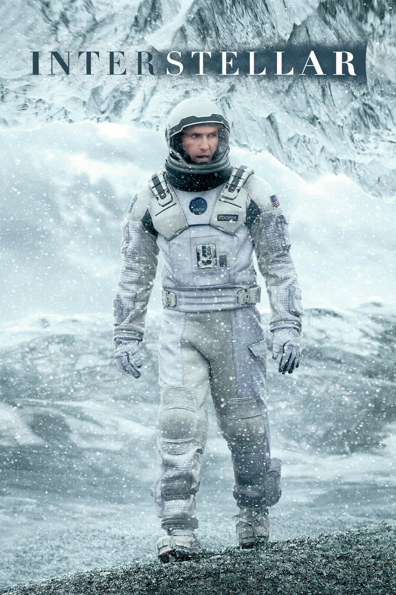
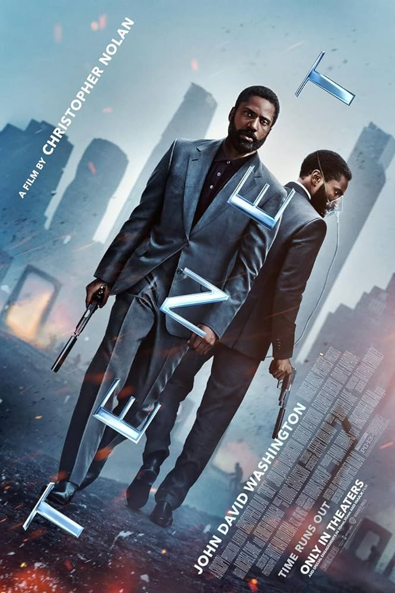

Interstellar
Director: Christopher Nolan
Year: 2014
Actors: Matthew McConaughey, Anne Hathaway, Jessica Chastain
Synopsis: A team of astronauts travels through a wormhole in search of a new home for humanity.
Memento
Director: Christopher Nolan
Year: 2000
Actors: Guy Pearce, Joe Pantoliano
Synopsis: A man with short-term memory loss tries to find his wife's killer.

The Dark Knight
Director: Christopher Nolan
Year: 2008
Actors: Christian Bale, Heath Ledger, Maggie Gyllenhaal
Synopsis: Batman faces off against the Joker in a battle for Gotham City.

Inception
Director: Christopher Nolan
Year: 2010
Actors: Leonardo DiCaprio, Elliot Page
Synopsis: A professional thief who steals corporate secrets through use of dream-sharing technology is given the inverse task of planting an idea into the mind of a C.E.O.

Dunkirk
Director: Christopher Nolan
Year: 2017
Actors: Fionn Whitehead, Harry Styles, Cillian Murphy
Synopsis: British soldiers attempt to evacuate from Dunkirk during World War II.

Tenet
Director: Christopher Nolan
Year: 2020
Actors: John David Washington, Elizabeth Debicki, Robert Pattinson
Synopsis: A secret agent manipulates the flow of time to prevent a global catastrophe.
The Batman (2022)
Director: Matt Reeves
Year: 2022
Actors: Robert Pattinson, Zoë Kravitz
Synopsis: Batman investigates a series of murders linked to The Riddler.

Blade Runner 2049 (2017)
Director: Denis Villeneuve
Year: 2017
Actors: Ryan Gosling, Ana de Armas
Synopsis: A new blade runner uncovers a long-buried secret that could destabilize society.

Arrival (2016)
Director: Denis Villeneuve
Year: 2016
class="actors" Actors: Amy Adams, Jeremy Renner
Synopsis: Linguists attempt to communicate with aliens to avert a global conflict.

Predestination (2014)
Director: The Spierig Brothers
Year: 2014
Actors: Ethan Hawke, Sarah Snook
Synopsis: A temporal agent pursues a criminal across time through a series of predestination paradoxes.